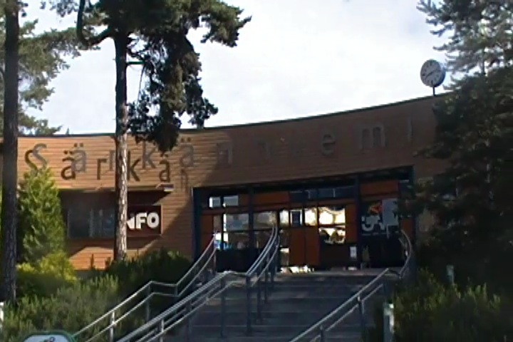
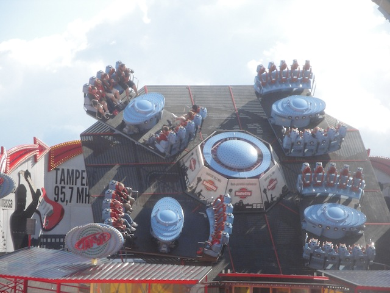
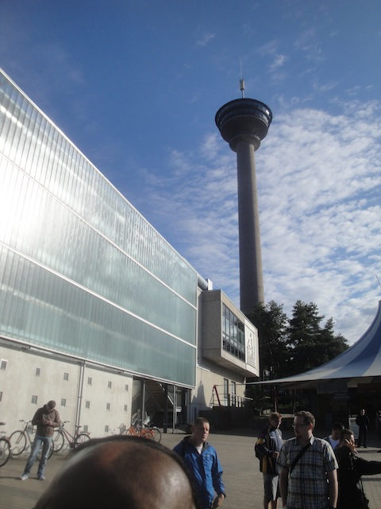
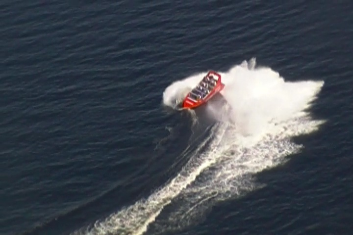

| |
Särkänniemi Review

Särkänniemi is a decent sized amusment park, located in Tampre, the second biggest city in all of Finland. And I'm not sure why, but something about Särkänniemi just really appealed to me. Something about this park just seemed really cool. And after visiting the park, yeah. It's a pretty cool park. Yeah, I'll admit that it's far from the best park in the world. It's fairly standard for the most part, and nothing at the park is what would be classified as the best in the world. But for all that the park has, it's a decent theme park. They actually do have some pretty good roller coasters, including one of the only Intamin Inverted coasters in the world. Yeah, those are surprisingly rare. And they're a lot of fun. Not to mention the other fun coasters in the park. But the rest of the park is pretty cool. Their flat ride collection is decent, their water ride collection is all right. And they actually have a lot of other cool stuff, such as an aquarium, a planetarium, and all sorts of other cool stuff. So people who visit the park have quite a bit of options while visiting the park. It just has...this weird sort of atmosphere that you don't see in American theme parks. Hell, even most European parks don't have this sort of an atmosphere. It's hard to really describe it. But it really helps the park and gives it a unique sort of charm. And to make things better, the park just keeping adding more and more stuff. So yeah. keep reading the review and see just what all Särkänniemi has to offer as we dig into far more detail in our review of this fun amausement park up in one of Finland's biggest cities.
Rollercoasters
There is a link to a review of all the Rollercoasters at Särkänniemi.
(Please keep in mind that there is no review of Hype since it didn't exist when I last visited.)
Top Coasters
Tornado Review

Decent Coasters
MotoGee Review

Trombi Review

Kiddy Coasters
Vauhtimato Review

Past Coasters
Halfpipe Review

Flat Rides
Here are the reviews of all the Flat Rides at Särkänniemi. OK. Let's first talk about what has to be the most unique flat ride at the park. A ride called Take-Off. And apparently, this ride is literally a Take Off. I had no idea what it was until I researched it. It's one of those rides that technically isn't that good. I mean, it's fun. But far from the best ride ever. But it's cool in just the sheer...there are no other rides like this out there way. Sort of like Sledgehammer @ Canada's Wonderland, or the last Topple Tower still standing at Djurs Sommerland. Seriously, I can't think of any other places that have a Huss Take Off. I think the only other ones travel in European fairs. Yeah, that sounds about right. OK. Moving on. Since my last visit, they've added a Maxi Dance Party 360. OK, Takeoff may be fun and unique, but this is almost certainly the best flat ride in the park. These things are freaking awesome. I loved the one that they just recently added at Silverwood. So to hear that Särkänniemi added one of these rides really makes me happy, as these things are freaking amazing. They're like frisbees, mixed in with those Spin Out carnival rides. I really hope these things really start to catch on, as they are great rides. OK. So Take Off was the only flat ride I rode at Särkänniemi. But apparently, they have a couple other flat rides. They also have one of those Disk-O coasters. Those things are...interesting. They're fun rides. But they're nothing really amazing or special. I'm not even sure if this thing was added since I visited the park, or if this ride was there, and I just ignored it. Not a big deal either way. These rides are fun, but not amazing. They also have a Magic Carpet, a pirate ship, a troika, chairswings, this one flat ride that I'm not sure what it's called, but I know I've seen it before, some bumper carousels, and two carousels. So yeah. Not the best flar ride collection, but it seems to be growing and improving.

Far from the best flat ride. But at least it's unique. =)
Dark Rides
Apparently, Särkänniemi has a dark ride. It's this sort of horror themed dark ride called Torni Orlochlessin. So I guess this thing is a Ghost Train or something like that. Honestly, I'm not even sure if this ride still exists. I never saw this ride anywhere in the park, and I only see a couple other trip reports. So I assume it's still there somewhere. But maybe they quietly removed it. Either way, Särkänniemi should really get a good new dark ride.
Water Rides
I didn't ride either of the water rides at Särkänniemi. But then again, neither of the water rides here look like anything special. The log flume they have just seems like a small little log flume that may not be anything special, but it's still seems like fun. And then they have their rapids ride. OK, it looks fairly good. Nothing special, just a standard rapids ride. I guess I shouldn't be too surprised by this as Finland isn't exactly a warm place, so they wouldn't really go crazy with their water rides and go above and beyond with them. But hey. It's always good to have some fun water rides.
Dining
The dining at Särkänniemi is fairly good. Nothing really special, but they seem to have some good food. Yeah, it seemed to just be typical amusement park crap. But honestly, it seemed to be better for the most part. The food we ate was pizza, and...it was good pizza. I know I'm generally not a fan of theme park pizza. But this was better than average. OK, it wasn't any of the pizza that you'd get from New York City or Italy. But it was good by theme park standards. I think it was probably less greasy. Also, that pizza place seemed to have...I think it was custom Särkänniemi soda. I translated the sign from Finnish into English and it just said Soft Drink. I think it's some sort of custom soda that's exclusive to Särkänniemi. Yeah, it's far from the best soda ever. It just seemed kind of standard. It's nothing that they should bottle and sell in a place like Rocket Fizz (Well, they can. But I'd never buy it since there are so many better options there). But it's always cool to have a custom soda that's exclusive to your park.
 Hey. The pizza is actually pretty good (and so's the custom soda).
Hey. The pizza is actually pretty good (and so's the custom soda).
Theming and Other Attractions
Here are the reviews of all the other stuff at Särkänniemi. OK, as far as theming goes, there is essentially none. Yeah, there's the Angry Birds kids area. But aside from that, there's essentially no theming. In fact, the park has this weird sort of...glum atmosphere. I think it's the colors. The entire park feels kind of stuck in the 1970s. Something about the park just feels trapped in time. And on top of that, the park has no color to it. AT ALL!!! Everything is gray and kind of drab. The entire park needs a visit from Rainbow Brite. Something about the park feels not only very urban...but almost...Eastern European. Well, that shouldn't be surprising as Finland is part of Eastern Europe. I know you don't really think about that since Finland is part of Scandinavia (or the Nordic countries if you want to get technical.), but Finland is totally part of Eastern Europe. You can tell with how they post stuff in Russian as one of the alternate languages along with Swedish and English (thank you English for being everywhere). OK. So Särkänniemi has no theming and desperately needs a new paint job. What about other stuff they have at the park? Yeah. They actually have quite a lot. I know it doesn't really seem like it as aside from roller coasters, they didn't seem to have too much. They only have a couple flat rides (though that's certianly growing), they might have a crappy dark ride, and they have a couple small water rides. But what Särkänniemi does have aside from roller coasters is a bunch of cool stuff. For instance, they have an aquarium, and a planetarium inside that giant observation tower. OK, before we go on, we have to talk about the observation tower. You see, it's not just your typical observation tower. The tower, called Näsinneula, is actually one of the symbols of Tampere, the 2nd biggest city in all of Finland. The tower towers over the entire city, and really sticks out in the skyline. Because I was surprised to learn this, but that tower, Näsinneula, is actually the tallest free standing strcture in all of Finland. And on top of that, it's the tallest observation tower out of any of the Nordic Countries. That's insane. Who knew the biggest building in all of Finland was right here in Särkänniemi. OK, Back to the stuff inside the tower. Inside there, you can not only see some cool animals, but also learn about outer space and astronomy. Granted, the 3D Show they have in the planetarium is absolutely awful, and they mainly talk about traveling to the moon, where they apparently built a clone of Särkänniemi. The entire thing was really stupid. And not in an amusing "This is so stupid, it's funny" kind of way. Stupid in a face-palm sort of way. I'm sure many will disagree. But actually, those who don't give a sh*t about Astronomy were just bored out of their minds. Yes, I am a bit of an astronomy nerd. Nothing crazy, I'd make a very sh*tty astronomer, but I do enjoy those space documentaries. I'm just a nerd in almost every way. I know they have a petting zoo in their kids area. Nothing special, but hey. Animals, and petting zoos are fun. I know this doesn't exist anymore, but I have to talk about their Dolphin Show. Because it was just so weird. It was this weird sort of Cirque due Solei show, where the trainers swam with the dolphin. They really seemed to get into it. And the whole thing was set to Elton John's version of "The Circle of Life". I know there was more to it, but I just remember that Lion King song. Because...WOW. This has to be the strangest theme park show I have ever seen. It was so...weird and bizarre, that it just seemed...I have no idea what to think of this. It's a shame that they don't do the show anymore. I guess people stopped seeing it because it was just too weird. And then finally, we have to talk about what is by far, my favorite random thing to do. Jet Boating. Now this is an upcharge, and normally, I stay far away from upcharge attractions. But when you're out Jetboating, you have to make an exception. Jetboating is the act of taking a jetboat, which is like a powerboat or a motorboat, except something about it is different, and I'm really not qualified to talk about the nerdy differences between powerboats, motorboats, and jetboats. Sorry boat nerds. Anyways, people commonly take out Jetboats and they go fast on the water, create these waves, go over them, splash everyone, and it's just a ton of fun. I absolutely love it. Now Jetboating most commonly takes place on rivers and sometimes lakes. From doing research, Queenstown, New Zealand is the Jetboat capital of the world, and several other similar places are big places for Jetboating. I know I did Jetboating on the St. Lawrence River in Montreal back in 2008, and absolutely loved it. So why am I bringing it up here? Well, Särkänniemi is located on a peninsula, sticking into Lake Näsijärvi. And they offer Jetboating on the lake. And it's just a ton of fun. Yeah, it's not quite as exciting as on the St. Lawrence River, but it's still a ton of fun. Seriously, if you haven't done jetboating, you need to do it. It is worth the Euros.

Tallest free standing structure in all of Finland.

If you haven't tried Jetboating, you must. It's awesome.
In Conclusion
Särkänniemi is a park that you wouldn't really think too much about. It's far from a roller coaster enthusiasts favorite park. But it is a lot of fun. It has some really good roller coasters, as Tornado is a really fun ride. And also kind of unique as there only 2 Intamin Inverts in the world. Plus, that new Superman clone they've added since should be really good as I really like the clone of that ride. But even outside roller coasters, there's a lot of fun stuff at Särkänniemi. They have a couple really cool flat rides, some water rides that should get you wet (if that's really what you need. But I doubt that in Finland), and on top of that, all sorts of other cool stuff, ranging from an aquarium, a cool dolphin exhibit, a planetarium, jet boating, and showcasing the tallest free standing structure in all of Finland. It's actually another one of those city parks that seem to be really popular in Europe. And yeah. It's one of the biggest attractions in all of Tampre. I know Tampre isn't exactly a major city and isn't something that most people will travel to for tourism, but it's still a decent sized city that has some recognition in Europe. And Särkänniemi is without a doubt, the star attraction in all of Tampre. I know it's getting some more recognition among enthusiasts for coasters such as Tornado, and while it's not quite as well known as other Finnish parks, such as Linnemaki, it's still a really good park that is totally worth a visit.
Enthusiast FAQs.
*Are there kiddy coaster restrictions? - Nope. You can ride the kiddy coaster here.

Tips
*Ride Tornado multiple times.
*Go Jetboating if you've never done so before. It's worth the upcharge.
*Be sure to check out some of the cool flat rides.
*Särkänniemi is only POV Friendly with Go-Pros. And even then, only with Go-Pros that have a chest mount.
*Don't wear bloody clothes with chainsaws on them (You don't want to scare the dolphins).
*Have Fun!!!!
Theme Park Category:
Amusement Park
Location
Tampere, Pirkanmaa, Finland
Last Day Visited
June 27, 2014
Video
I don't have enough video to make a real quality Särkänniemi video. I'll have to go back and shoot more video.
Complete Update List
2014
TPR's Scandinavia Trip
Here's a link to the parks website.
Home
|